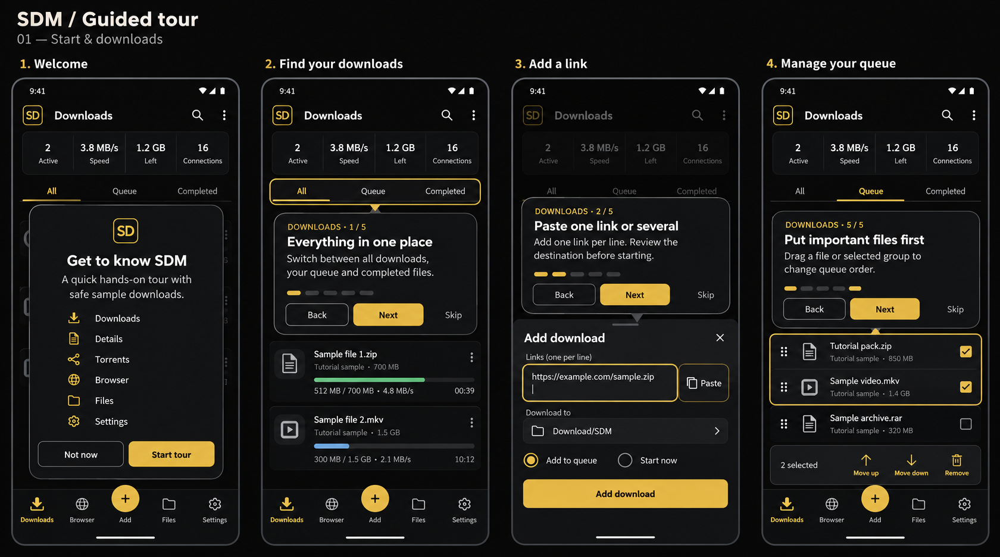
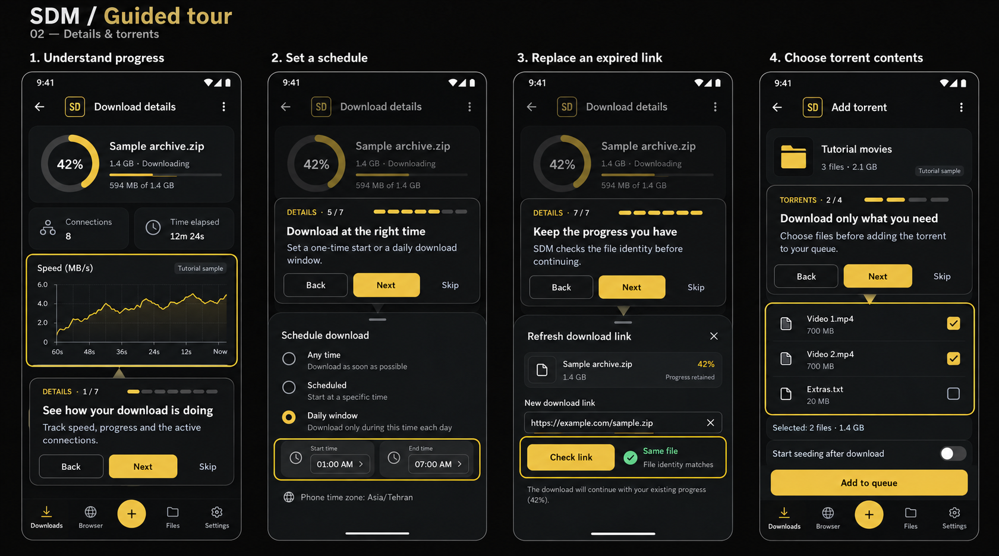
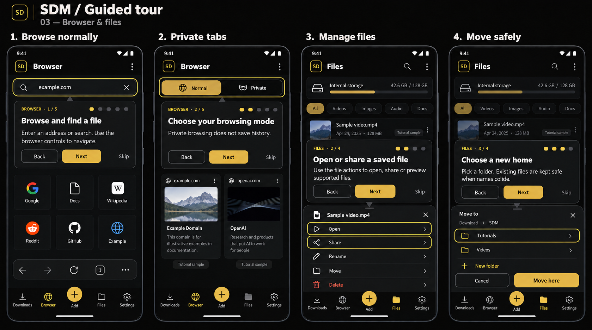
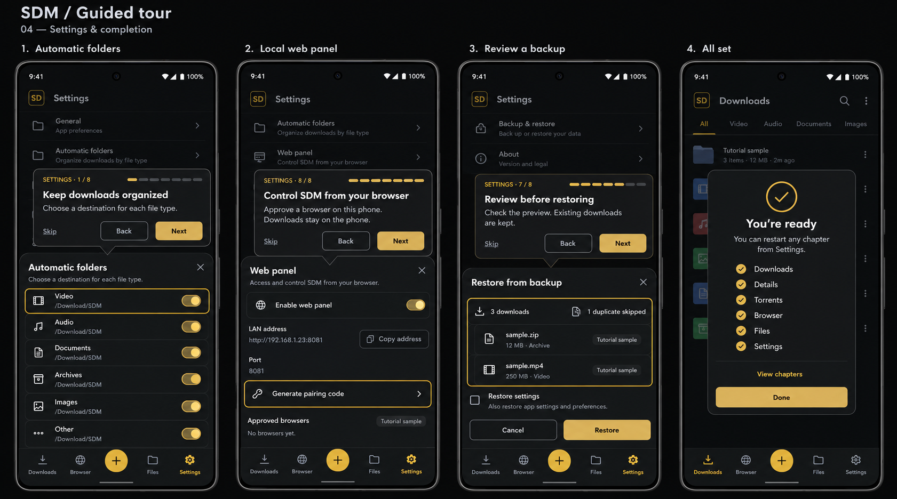
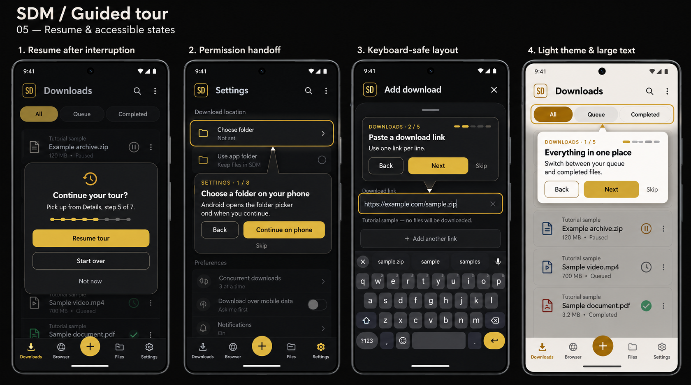

1. شروع و دانلودها
پیشنهاد آموزش، فیلترها، افزودن لینک و مدیریت صف

برای دیدن تصویر در اندازهٔ کامل روی آن بزن.2. جزئیات و تورنت
نمودار، زمانبندی، لینک جایگزین و انتخاب محتوای تورنت

برای دیدن تصویر در اندازهٔ کامل روی آن بزن.3. بروزر و فایلها
آدرس، مرور خصوصی، بازکردن/اشتراک و جابهجایی

برای دیدن تصویر در اندازهٔ کامل روی آن بزن.4. تنظیمات و پایان
پوشهبندی، پنل وب، بکاپ و پایان آموزش

برای دیدن تصویر در اندازهٔ کامل روی آن بزن.5. وقفه و دسترسیپذیری
ادامهٔ آموزش، اجازهٔ پوشه، کیبورد و متن بزرگ

برای دیدن تصویر در اندازهٔ کامل روی آن بزن.